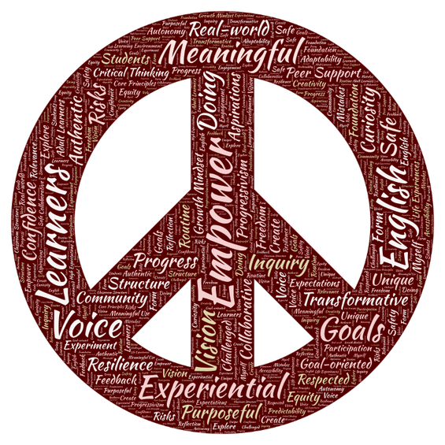

Mission
To empower learners by fostering a love for English through meaningful, experiential, and inclusive language instruction. I believe education is a transformative tool, and I am committed to creating opportunities for all students to discover their voice, build confidence, and achieve their personal and professional goals.
Philosophy
Rooted in progressivism, my teaching philosophy centers on learning by doing. Language acquisition thrives when students engage in authentic, purposeful tasks—speaking, listening, reading, and writing in real-world contexts. I value inquiry-based learning, encouraging curiosity and critical thinking, building community, collaboration, and growth mindset.
Vision
I envision a classroom where every student feels safe to take risks, challenged to grow, and respected for their unique experiences. My approach leverages the strengths of adult learners, using their life experiences as a foundation for language development. Routine and structure provide the freedom to explore, experiment, and create.
Expectations
- For Students: Active participation, openness to feedback, and a willingness to embrace mistakes as part of the learning process.
- For Myself: Continuous reflection, adaptability, and a commitment to equity and accessibility in language education.
Core Principles
- Language Development: Meaningful use before form.
- Adult Learners: Autonomy and relevance drive engagement.
- Learning Environment: Balance safety with high expectations.
- Classroom Structure: Predictability fosters creativity.
Teaching Philosophy Word Cloud

Word Cloud Reflection
My word cloud beautifully captures the essence of my teaching philosophy, with the most prominent words reflecting the heart of my mission and values as an educator. Here's a brief discussion of their significance:
Prominent Words: The Core of Your Philosophy
Empower
Voice
Learners
English
Goals
Experimental
Meaningful
These words underscore your student-centered, transformative approach:
- Empower and voice highlight your commitment to giving students agency and confidence in their language journey.
- Learners and English anchor your focus on the individuals you teach and the language as a tool for connection and opportunity.
- Goals and experimental reflect your belief in purposeful, inquiry-driven learning—students are not passive recipients but active explorers.
- Meaningful reinforces your priority: language acquisition thrives when it's authentic and relevant to students' lives.
Next Level: The Environment and Mindset
Confidence
Real-World
Purposeful
Unique
Resilience
Safe
Inquiry
Curiosity
Risks
Transformative
Authentic
These words flesh out the conditions and attitudes you cultivate in your classroom:
- Confidence and resilience are outcomes of a safe, supportive environment where mistakes are part of growth.
- Real-world and purposeful emphasize your focus on practical, applicable skills—language as a tool for life, not just the classroom.
- Unique, inquiry, curiosity, risks celebrate individuality and exploration, aligning with your progressivist belief that learning is rooted in questioning and discovering.
- Transformative and authentic speak to your vision of education as a life-changing experience, not just a series of lessons.